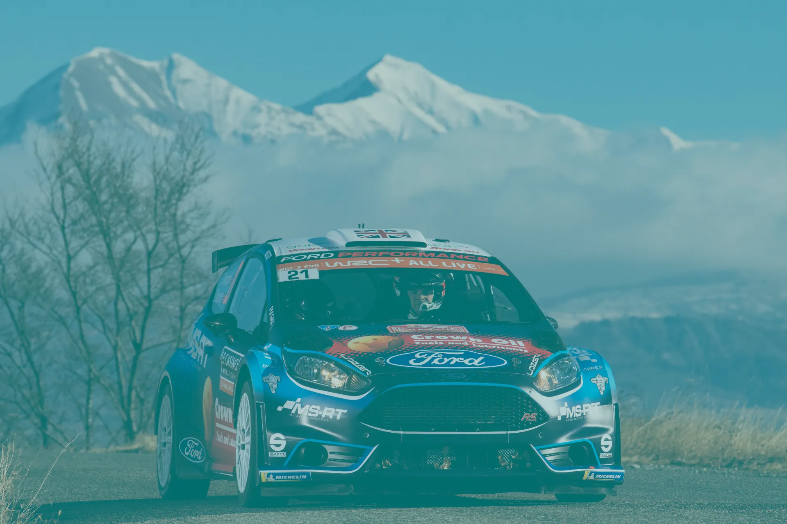
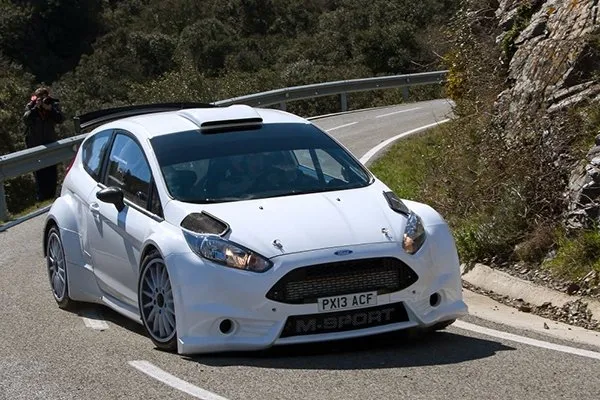
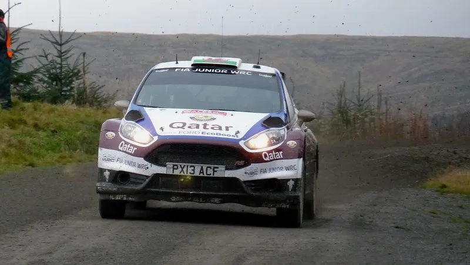
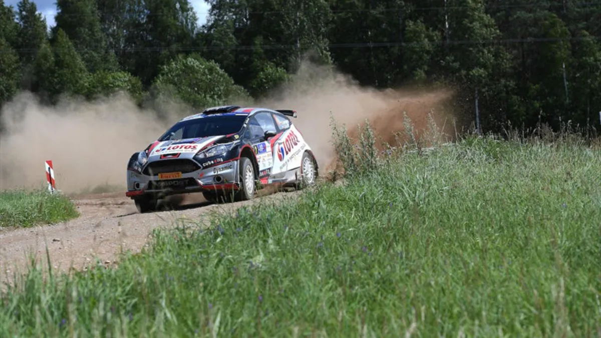
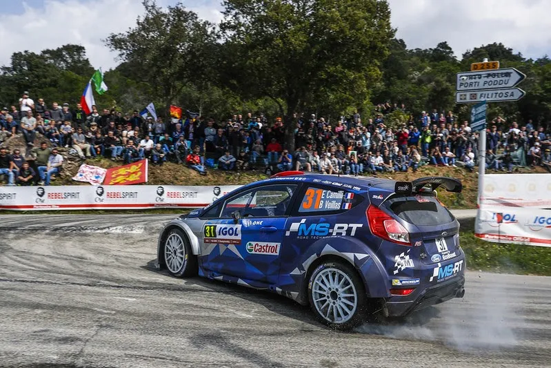
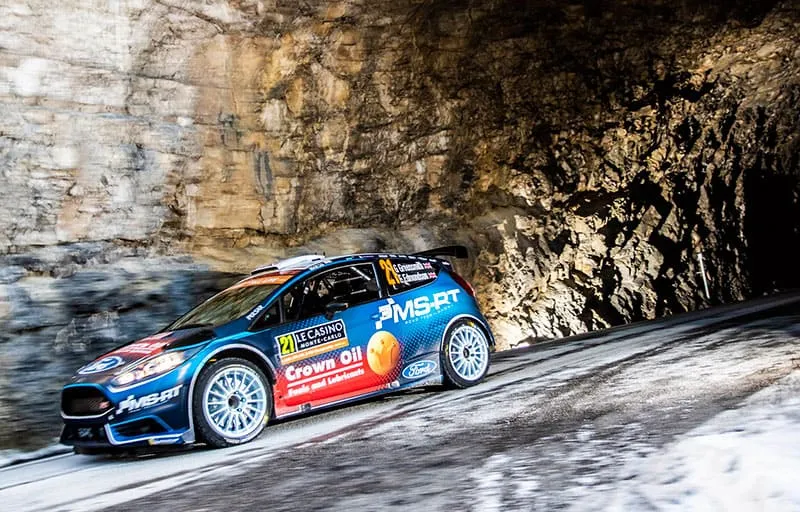

The R5 Class: The Story So Far
Ford Fiesta R5
Welcome to the R5 class history, a series where we will be taking a look at the cars in the R5/Rally2 class, and how they performed in the most competitive of championships, as well as what drivers performed the best in them. I have put together an algorithm that counts the wins, podiums and stage wins of each Rally2 car, and ranks them based on these achievements. A win counts for 3 points, a podium counts for one, and each stage win is worth a tenth of a point. We will start this series with the first R5 homologated, the Fiesta R5.
Please use the "Desktop Site" option from your browser if you are on mobile for a better experience

Picture from AutoHebdo
The Ford Fiesta R5 was the first car to adhere to the R5 regulations. It was based on the Ford Fiesta ST and used a 1.6L Ecoboost engine. It replaced the successful Ford Fiesta S2000/RRC.
The car made its debut as the 0 car in the Malcolm Wilson Rally in 2013. It would make its competitive debut in the international scene at Rally Finland. Jari Ketomaa would give the Fiesta its first win by winning the WRC2 class ahead of Robert Kubica in the DS3 S2000. The Fiesta would be used throughout the rest of 2013 in both WRC2 and ERC, and would achieve two more wins, one in WRC2 and one in ERC. Elfyn Evans would head a Fiesta R5 1-2-3-4-5 in Wales Rally GB, and Kajetan Kajetanowicz would win his home rally ahead of the S2000s in Poland.

MidWales - flickrr
For 2014, the Fiesta would hold a monopoly in WRC2 and would achieve a total of 6 wins and 21 podiums. Despite that, none of the Fiesta drivers would win the title, with Nasser Al-Attiyah beating out everyone in the older Fiesta RRC. Ott Tanak managed a win and three podiums, and was the driver with the most stage wins that year, with 67, more than second and third best combined!
Tanak would give the Fiesta R5 its only win of the season in the ERC as well, winning in his home rally in Estonia. Interestingly, Kajetanowicz in the Fiesta would go winless and finish 4th in the standings, losing out to two factory Fabia S2000s, as well as the new 208 T16 R5 of Craig Breen.
In 2015, the class saw more cars homologated, namely the DS3 R5 and the Fabia R5 later in the year. Despite that, the S2000 and RRC cars were still used, with Nasser Al-Attiyah again winning the title in WRC2, using a Fiesta RRC in most of the rallies. The R5 would only manage one win thanks to Jari Ketomaa in Sweden, whereas the RRC would be driven to 6!
In ERC however, Kajetanowicz would manage to win three events, as well as the ERC title, giving the Fiesta R5 its first ever international title. It was the first international title for an R5 car. Alexey Lukyanuk would also manage a win in ERC, winning the Rallye du Valais in Switzerland.

Eurosport
For 2016, Elfyn Evans would pilot a factory Fiesta R5 to three wins and five podiums in WRC2, enough for 3rd place in the class championship. He’d be outclassed by Esapekka Lappi and Teemu Suninen in Fabia R5s.
In ERC, Kajetanowicz would go back to back, winning the title ahead of Lukyanuk, with the pair having a combined three wins. Ricardo Moura would also win aboard a Fiesta R5, edging out everyone in Azores.

federicociverchia - flickrr
The following year, Teemu Suninen and Eric Camilli would be factory drivers on M-Sport’s WRC2 programme. Suninen would amass one win and four podiums, with 17 stage wins, and Camilli would achieve one win as well, with three podiums and also 14 stage wins. Kalle Rovanpera would also compete in select WRC2 rallies in a Fiesta, winning in Australia (albeit whilst being the only entrant).
Kajetanowicz would make it three in a row in ERC, winning the title. The Pole, as well as Bryan Bouffier and Nasser Al-Attiyah would guide the Fiesta to 4 wins, a 50% win-rate across the season. In total in both WRC2 and ERC, the Fiesta would achieve 7 wins and 22 podiums in 21 rallies.
2018 showed that the Fiesta was slowly getting edged out on pace by the newer Fabia. In WRC2, Takamoto Katsuta would win a rally, and Alberto Heller would win in Australia as the only R5. Gus Greensmith, Teemu Suninen and Pedro Heller would manage podium finishes, but the 2 wins and 9 podiums would be a low result compared to the Fabia’s 11 wins and 21 podiums.
In ERC however, Lukyanuk would fend off the Fabias for his first ERC driver’s title. The Russian would win three rallies and win 30 stages.
2019 would be the last year the Fiesta R5 would be produced, being replaced by the new R5 mkII mid-year. In the newly formed WRC2-Pro championship for factory R5 entries, Gus Greensmith and Łukasz Pieniążek would pilot factory Fiestas. Greensmith would win in Monte-Carlo and Pieniążek would win Corsica and Mexico (while being the only finisher).
There wouldn’t be a fifth title in a row in the European Rally Championship for the Fiesta, with Lukyanuk switching to the C3 R5. Mikko Hirvonen would get the Fiesta’s last ever podium in international competition by finishing 3rd in Rally Cyprus.

Picture from AutoHebdo
The Fiesta would continue to be used in WRC2 in following years by slower privateers, with its last entry to date coming in Safari Rally Kenya this year with Carl Tundo. Bruno Amaral is the last driver to enter a Fiesta R5 in an ERC rally, with that instance being Azores 2021.
Overall, 38 drivers would score podiums while driving a Fiesta R5 in WRC2 and ERC, with 18 managing event wins. The car would amass a total of 37 wins and 118 podium finishes across six seasons of manufacturer support. Most of the car’s success came in the ERC, where the Fiesta R5 would win four driver’s titles.
Below you can find a table with every driver to score at least a podium with the Fiesta R5, and how much of the car's total score they contributed to.
The Fiesta excelled on gravel, with 17 of its wins coming on that surface. It especially did well on fast gravel in the beginning, using its higher top speed to its advantage, also having three wins on snow. Interestingly, the car also did well on icy tarmac, winning Monte-Carlo and Janner Rallye a total of 4 times.
The Fiesta R5 was no slouch on tarmac either, with 12 wins on sealed surface. I think it's not unreasonable to call it an "all around car", decently fast on all surfaces, but not the outright fastest in any.
The event won the most by the Fiesta R5 was Monte-Carlo, Sweden, Rally Islas Canarias and Rally Cyprus, with three wins in each event.


Comments